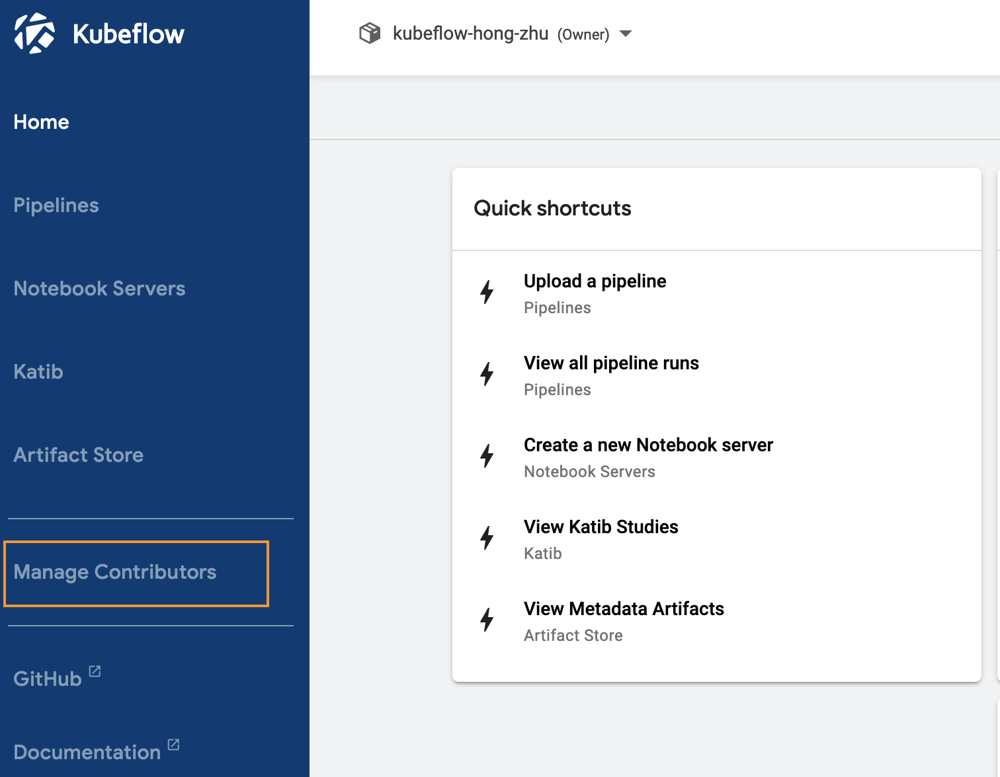
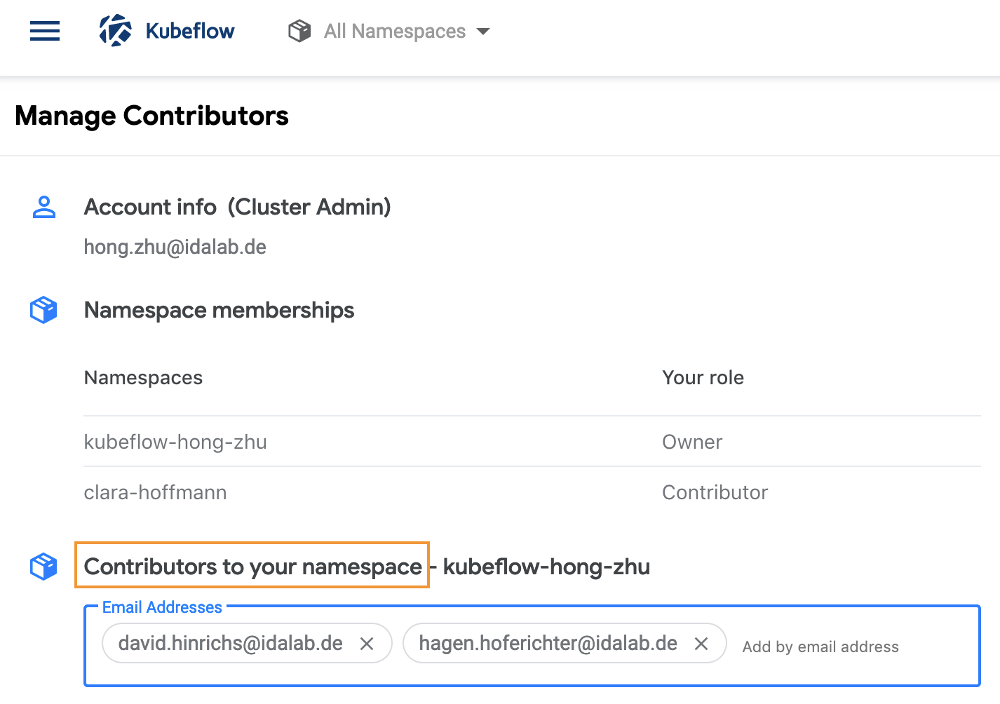
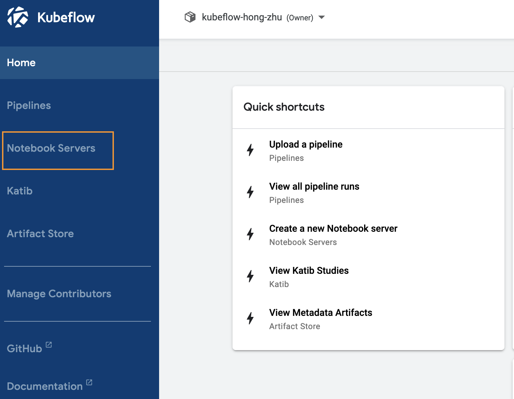
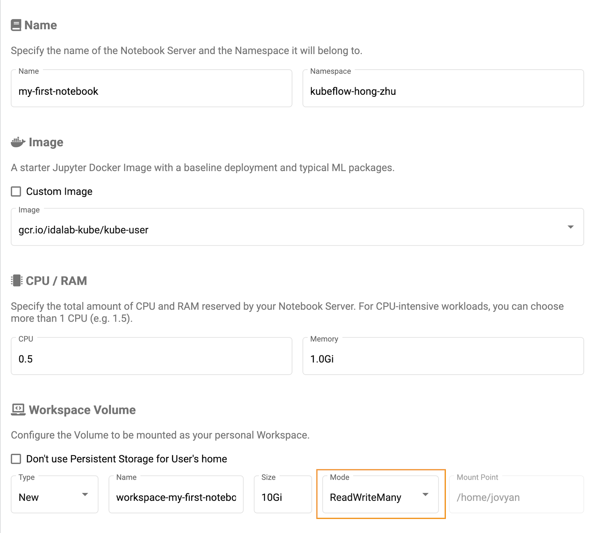
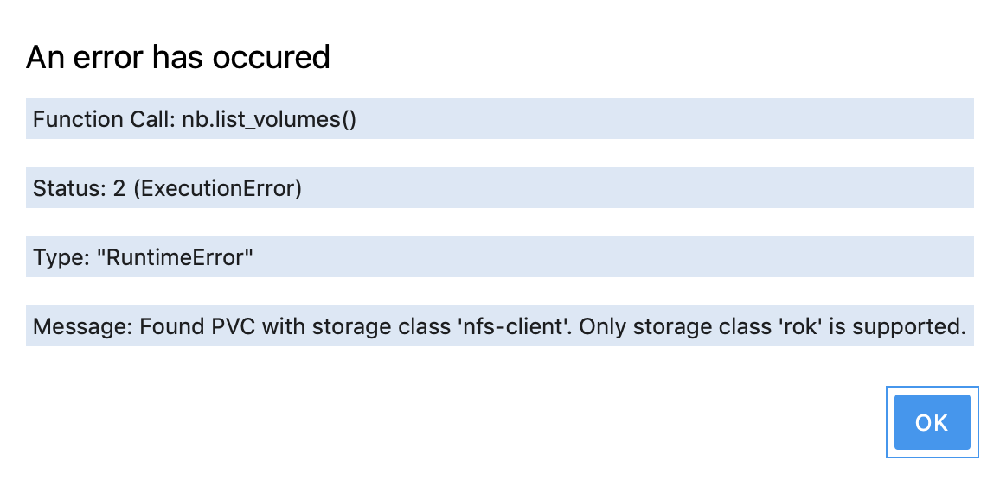
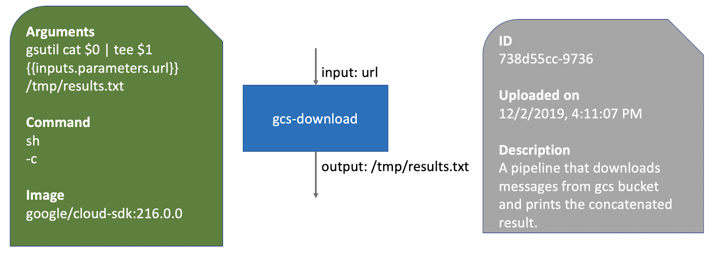
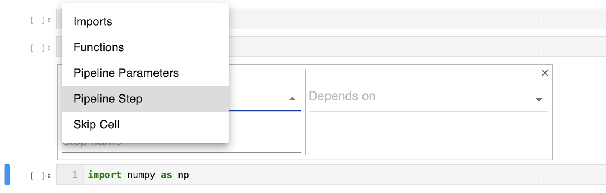
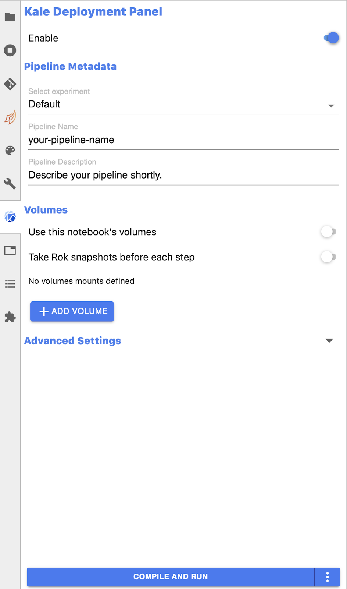
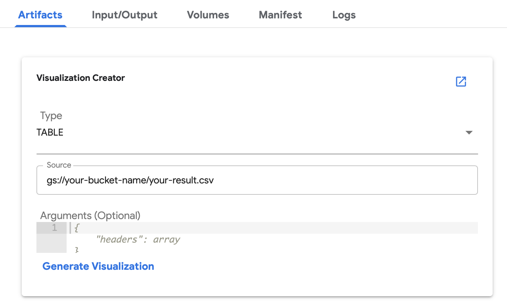

Backgrounds
As datasets continue to expand and models grow become complex, distributing machine learning workloads across multiple instances is becoming more attractive. Unfortunately, breaking up and distributing a workload can add both computational overhead, and a great deal more complexity to the system. Data scientists should be able to focus on ML problems, not DevOps.
Fortunately, distributed workloads are becoming easier to manage, thanks to Kubernetes .
Kubernetes is a mature, production ready platform that gives developers a simple API to deploy programs to a cluster of machines as if they were a single piece of hardware. Using Kubernetes, computational resources can be added or removed as desired, and the same cluster can be used to both train and serve ML models.
What is Kubeflow?
Kubeflow is a free and open-source software platform developed by Google and first released in 2018. It is dedicated to making deployments of machine learning workflows on Kubernetes simple, portable and scalable. Kubeflow provides a straightforward way to deploy best-of-breed open-source systems for ML to diverse cloud infrastructures (AWS, GCP, Azure etc.).
In short, you could understand Kubeflow as the machine learning toolkit for Kubernetes. Features that are supported by Kubeflow will be introduced in detail in the next Chapter.
This codelab will serve as an introduction to Kubeflow, an open-source project which aims to make running ML workloads on Kubernetes simple, portable and scalable. Kubeflow adds some resources to your cluster to assist with a variety of tasks, including training and serving models and running Jupyter Notebooks. It also extends the Kubernetes API by adding new Custom Resource Definitions (CRDs) to your cluster, so machine learning workloads can be treated as first-class citizens by Kubernetes.
Kubeflow at idalab
The picture below presents a rough structure of our Kubeflow deployment at Google Cloud.
Each Kubeflow consumer here at idalab will be assigned a User Service Account to access to Kubeflow services hosted on the compute engine.
Now taking notebook server for instance, unlike other systems you may have used in the past, Kubernetes doesn't run the containerized Jupyterlab directly. Instead the Jupyterlab container will be wrapped together with a istio-proxy container into a higher-level structure called pod. Any containers in the same pod will share the same resources and local network. Containers can easily communicate with other containers in the same pod as though they were on the same machine while maintaining a degree of isolation from others.
Pods are deployed on Nodes. A node is the smallest unit of computing hardware in Kubernetes. It is a representation of a single machine in the cluster. In our case, they are the virtual machines hosted on the cloud provider Google Cloud Platform.
Because programs running on our cluster aren't guaranteed to run on a specific node, data can't be saved to any arbitrary place in the file system. If a program tries to save data to a file for later, but is then relocated onto a new node, the file will no longer be where the program expects it to be. For this reason, the traditional local storage associated to each node is treated as a temporary cache to hold programs, but any data saved locally can not be expected to persist. Therefore, to store data permanently, Kubernetes uses Persistent Volumes. In our project, we use Google Cloud Filestore to be attached to the cluster as persistent volumes. This can be thought of as plugging an external hard drive in to the cluster. Persistent Volumes provide a file system that can be mounted to the cluster, without being associated with any particular node.
To begin, please click the link kube.idalab.de to access the Kubeflow central dashboard.
During the workshop, if you encounter any issues feel free to contact by clicking the Report a mistake at the bottom 😉.
If this is your first time to access the UI, you need to first create your personal namespace in the forms of firstname-lastname. The primary purpose of this functionality is to enable multiple users to operate on a shared Kubeflow deployment without stepping on each others' jobs and resources. For more information see https://www.kubeflow.org/docs/other-guides/multi-user-overview/
Managing Namespace Contributors
Kubeflow allows you to share your profiles with other users in the system. An owner of a profile can share access to their profile using the Manage Contributors tab available through the dashboard.
Below is an example of the manage contributors tab view, to add and remove contributors is easily possible by simply adding/removing the user identifier (idalab user email address) in the Contributors to your namespace field. Once added, the Manage Contributors tab will show the profiles with their corresponding contributors listed.

The contributors will have access to all the Kubernetes resources in the namespace and will be able to create notebook servers as well as access existing notebooks. The contributor's access can be removed by the owner of a profile by visiting the manage contributors tab and removing the user email/id from the list of contributors.

Set up Your Notebooks
One of the most important services provided by Kubeflow deployment is spawning and managing Jupyter notebooks. You can set up multiple notebook servers under your namespace. Each notebook server is configured by default as a Jupyterlab server and can include multiple notebooks.

This guide shows you how to set up a notebook server for your Jupyter notebooks in Kubeflow:
- In your Kubeflow UI, choose the namespace corresponding to your Kubeflow profile and click Notebook Servers in the left-hand panel
- Click NEW SERVER to create a notebook server.
- Now you should see a page for entering details of your new server.
Enter a name of your choice for the notebook server. The name can include letters and numbers, but no spaces. For example, my-first-notebook. - Kubeflow automatically updates the value in the namespace field to be the same as the namespace that you selected in a previous step. This ensures that the new notebook server is in a namespace that you can access.
- Select a Docker image for the baseline deployment of your notebook server. By default, you are using the one customized by idalab
gcr.io/idalab-kube/kube-user - Specify the total amount of CPU that your notebook server should reserve. The default is 0.5. For CPU-intensive jobs, you can choose more than one CPU (for example, 1.5).
- Specify the total amount of memory (RAM) that your notebook server should reserve. The default is 1.0Gi.
- Specify a workspace volume to hold your personal workspace for this notebook server. Kubeflow provisions a Kubernetes persistent volume for your workspace volume. The PV ensures that you can retain data even if you destroy your notebook server.
Notice that you need to define your access mode asReadWriteManyto ensure the usage of Kale (will be explained later), this means that the volume can be mounted as read-write by a single node. - Click LAUNCH. You should see an entry for your new notebook server on the Notebook Servers page, with a spinning indicator in the Status column. It can take a few minutes to set up the notebook server.
- Click CONNECT once the launching is done.
Notice that you may encounter anupstream connect error, this means the initialization of your container is not finished yet. Simply close the tab and try later.

The notebook server is initialized with basic ML packages as well as some prepared data science repositories:
- Practical skills
This can be taken as a training ground for the competency "Practical skills, tooling & tech understanding". - Project template
This contains a starting point for a typical idalab project. - User configs
Personal configurations for deployments.
If you encounter a pop-up window as below, just click OK and everything will be fine. This has something to do with Kale which is still under development. It will be solved in the near future.

Introduction to Kubeflow Pipeline (KFP)
A machine learning pipeline is a description of a machine learning workflow, including all of the components in the workflow and how they combine in the form of a graph.
As one of the most important features of Kubeflow, the Kubeflow pipeline is a platform for building and deploying portable, scalable machine learning workflows based on Docker containers.
A pipeline consists of one or multiple components. A component is an implementation of a pipeline task, which represents a step in the workflow. Each component takes one or more inputs and may produce one or more outputs.
In general, each component consists of
- Interface
Input/output specifications (name, id, description, default value, etc). - Implementation
A specification of how to run the component given a set of argument values for the component's inputs. The implementation section also describes how to get the output values from the component once the component has finished running. - Metadata
Name, description, etc.

In Kubeflow, each component is packaged as a Docker image which executes independently. This means the components do not run in the same process and cannot directly share in-memory data. You must serialize (to strings or files) all the data pieces that you pass between the components so that the data can travel over the distributed network. You must then deserialize the data for use in the downstream component. (Don't worry, we have the tools for that)
Pipeline Deployment with Kale
Kale is a Python package that aims at automatically deploy a general purpose Jupyter Notebook as a running Kubeflow Pipelines instance, without requiring the use the specific KFP DSL.
The general idea of kale is to automatically arrange the cells included in a notebook, and transform them into a unified KFP-compliant pipeline. To do so, the user is only required to decide which cells correspond to which pipeline step, by the use of tags. In this way, a researcher can better focus on building and testing its code locally, and then scale it in a simple, organized and controlled way.
Kale uses the out-of-the-box tagging feature provided by Jupyter, therefore lets you associate each cells with custom defined tags. The tags are used to tell Kale how to convert the notebook's code cells into an execution graph, by specifying the execution dependencies between the pipeline steps and which code cells to merge together.
To specify a notebook code cell, simply click the pencil bottom at the right-hand panel, and you'll see the following options:

Below is a detailed list of tags recognized by Kale:
Imports | Code to be added at the beginning of every pipeline step. This is particularly useful with cells containing import statements |
Functions | Code to be added at the beginning of every pipeline step, but after import statements. This is particularly useful for functions or statements used in multiple pipeline steps |
Pipeline Variables | To be used in cells that contain just variable assignment of primitive types |
Pipeline Step | Assign the current cell to a pipeline step. If necessary, define a dependency of the current cell to other pipeline steps |
Skill Cells | Do not include the code of the cell in the pipeline |
Let's Start
Now that you have learned the basic concepts about Kubeflow pipeline and Kale, it's time to try something by yourself. We prepared an example notebook which shows you how to prepare a pipeline using Kale, upload it to Kubeflow Pipelines, then run it.
Now go back to your notebook server and open the terminal. Entering the following commands to clone the prepared repository:
cd work git clone https://github.com/idalab-de/kube-tutorial.git
Navigate to the following directory work/kube-tutorial/pipeline, open the prepared example notebook analytics.ipynb.
Click the blue bottom In the left-hand panel and click Enable to enable the Kale pipeline extension. To deploy a pipeline, you must select an experiment name (An experiment is a workspace where you can try different configurations of your pipelines) as well as define a pipeline name. You don't have to worry about the volumes since you've already bound to your workspace volume. Once the design work of your pipeline is done, simply click the COMPILE AND RUN bottom to submit your pipeline into pipeline UI.

Now you could explore the graph and other aspects of your run by clicking on the components of the graph and the other UI elements. The component Logs is quite useful for checking components's state, and component Artifacts can be used for visualizing the component's outputs. For example, if you have your result stored in GCS bucket in a csv format, you could give the bucket path as source and visualize it into a table.

Now you are all set, just follow the instructions there to get your first hands-on experience of Kubeflow pipeline. Have fun! 😎
Your Feedback is very important to us to make it better: https://forms.gle/ARdrjNxesNnzhcgH8 (anonym)